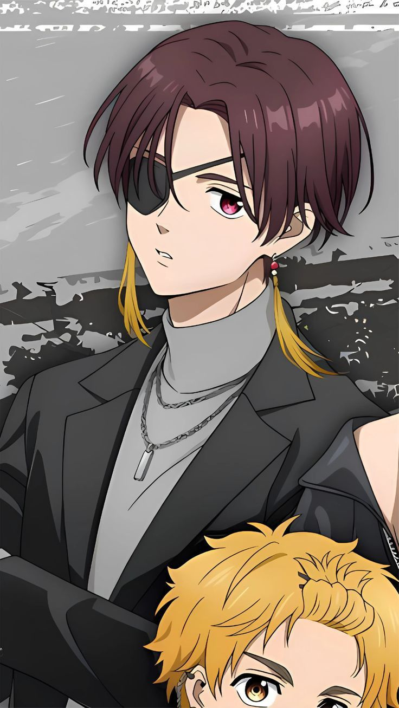
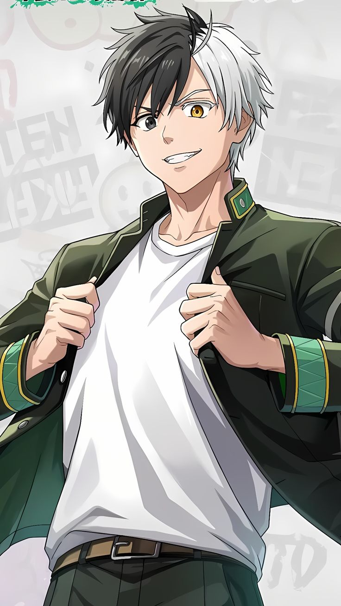
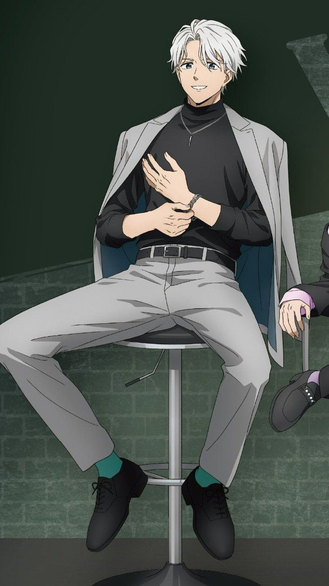

Suo Hayato 蘇枋隼飛
風鈴高中一年一班。總是面帶爽朗的笑容，對待任何人都很溫柔。不過他無俚頭的玩笑偶爾會使周遭陷入混亂。另一方面，他在面對缺乏禮儀的人時也會展現出冷酷無情的一面。不常將情感面露於表，也很少展現真心，是個充滿謎團的存在。有著會讓人連想到功夫及和氣道的獨特的打架風格。

Sakura Haruka 櫻遙
風鈴高中一年一班。喜歡的東西是強者。為了靠打架爬上「頂點」，從城鎮「外面」來到了風鈴高中。因為外表的關係，將自己受他人抗拒、「孤獨一人」視為很理所當然的事。認為自己是「除了打架外沒有其他長處，被他人嫌棄的底層存在」，覺得藉由贏得勝利並往上爬能感覺到自己的價值。

Kaji Ren 梶蓮
風鈴高中的二年一班級長。總是戴著耳機大聲聽音樂，也常常含著棒棒糖。乍看之下讓人難以捉摸他在想什麼，但其實感情深厚，與副班長楠見等夥伴之間有著強烈的羈絆。

Hajime Umemiya 梅宮一
風鈴高中三年一班。「防風林」的總代＝頂點。為人和善的笑容和個性，加上絕對可靠的信賴，不光是在風鈴高中生間，連城鎮的人們也都受他的魅力所吸引。不只拳頭威力強，為人也頗有器量。有著一出聲就足以壓倒周遭的存在感。興趣是種植蔬菜。